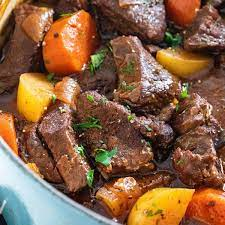

Beef Stew

Home made beef stew
Ingredients
- some form of stew meat
- carrotts
- onion
- potatoes
- beef broth
- Chop up vegetables
- cube and brown the meat
- add everything to slow cooker
- add seasonings to slow cooker
- cook on low heat for 8 hours, or high for 4 hours
- serve and enjoy!